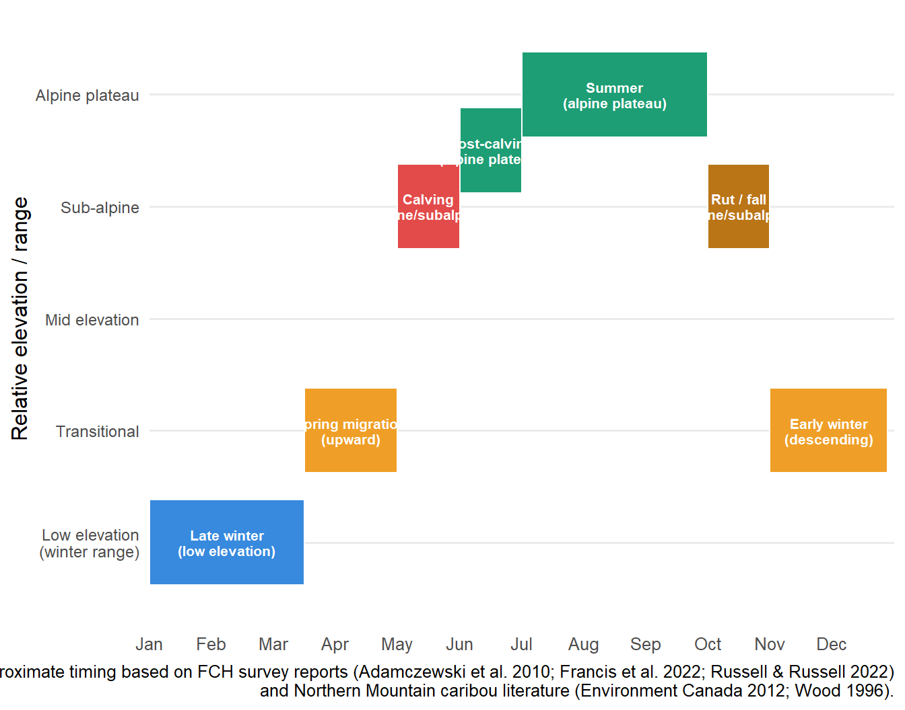

8 Seasonal movements
8.1 Annual migration cycle
The FCH undertakes a pronounced annual elevational migration between its low-elevation winter range and high-elevation summer range — a pattern typical of Northern Mountain woodland caribou but distinct from more sedentary boreal populations. The seasonal cycle is driven by three interacting forces: forage availability, predator avoidance, and insect relief. The ability to move freely between seasonal ranges is considered vitally important for Northern Mountain caribou populations (Environment Canada 2012).
The diagram below summarises the approximate timing and direction of seasonal movements for the FCH based on survey report observations, radio-collar data from the 1982–1987 collaring program, and the broader Northern Mountain caribou literature.
8.2 Phase-by-phase movement description
Late winter (December – March)
The majority of the FCH winters on the lowland lichen-rich forests east of Ross River, north of the Pelly Mountains. Animals are most concentrated during this period — a key reason why late-winter surveys are logistically feasible. The core winter range lies on both sides of the Robert Campbell Highway. Approximately one-third of the herd uses a separate group of alpine blocks north of the Highway, ranging close to the NWT border. This spatial split appears consistent across survey years.
The precise location of wintering animals within the range shifts between years depending on snow depth. In most years, the bulk of the herd winters near Caribou Lakes; however, in 2007 deeper-than-normal snow there pushed animals east toward Finlayson Lake — an unusual distribution not documented in any prior survey (Adamczewski et al. 2010). More recently (2022), the herd was again concentrated south of the Highway in the Caribou Lakes area, more consistent with the historical 1986–1999 pattern.
Spring migration (April – May)
As snow begins to melt, caribou move from lowland winter range upward toward spring and summer range. In spring, caribou move from high elevation winter ranges to lower elevation habitat, primarily lodgepole pine and lodgepole pine–white spruce dominated stands. In early spring, caribou seek new green vegetation in bogs, riparian areas, and open meadows. Use of habitats such as south-facing deciduous hillsides and meadows that become snow-free earlier than heavily timbered areas is common. Pregnant females typically lead the spring migration, ascending to summer ranges before males.
Calving (late May – June)
Calving occurs in late May to early June on high-elevation subalpine and alpine/parkland habitats, primarily on alpine plateaus south of Finlayson Lake. During calving, females are widely dispersed and largely solitary — making this the most difficult season for aerial survey work. The isolation of calving females from other ungulates (and thus from wolves, whose numbers are sustained by moose) is considered an active anti-predator strategy. Calving caribou were not found within the Kudz Ze Kayah project footprint during wildlife baseline surveys (BMC 2017).
Post-calving summer (July – September)
After calving, cows with calves aggregate into larger groups, often seeking wind-exposed ridges, icefalls, and snowfields to escape harassment by insects (mosquitoes, black flies, bot flies, warble flies). Summer range consists primarily of upper-elevation spruce/fir forest and subalpine/alpine areas. Summer diet is more diverse than in winter, consisting of forbs, deciduous leaves, lichens, fungi, grasses, and sedges. The FCH’s core summer and fall range is on alpine plateaus south of Finlayson Lake, overlapping the Pelly Mountains mineral exploration belt.
Rut / fall (October – November)
The annual rut occurs in October–November on alpine and subalpine range. During this period bulls seek out concentrated cow groups, and animals aggregate at higher elevations — the timing exploited by the mark-resight method used for all other Yukon Northern Mountain herds. The FCH’s rut range overlaps significantly with the proposed Kudz Ze Kayah mine area, making this the period of greatest potential Project–caribou interaction (BMC 2017; Johannesen & Setterington 2019).
Early winter descent (November – December)
As winter weather sets in and snow deepens at higher elevations, caribou descend back to their lowland winter range to access terrestrial lichens. The timing and route of this descent may vary by individual, with some animals lingering at mid-elevations before moving fully to the winter range.
8.3 Sex-specific spatial segregation in winter
A consistent and ecologically important pattern documented across all FCH surveys is the spatial segregation of bulls from cows and calves during winter. This was first documented in early March surveys and is now well-established:
- Bull-dominated groups (> 50% bulls) tend to be smaller (averaging 3–22 individuals in 2022), distributed more broadly, often north of the Robert Campbell Highway, and in the more western portion of the study area.
- Cow-dominated groups (< 50% bulls) tend to be larger (averaging 13 individuals in 2022), concentrated south of the Highway, with distribution extending further east.
In 2007, of the 228 mature bulls counted, 198 (86.8%) were in all-bull groups, mostly north and west of the Pelly River (Adamczewski et al. 2010). This pattern has been consistently observed across the 1986, 1990, 1996, 1999, 2007, 2017, and 2022 surveys.
Why does segregation occur?
Sex-biased winter distribution in caribou is well-documented and is believed to result from antlered cows (who retain their antlers through winter, unlike bulls who shed theirs in November) gathering and defending limited, high-quality foraging areas to ensure adequate nutrition during pregnancy. This gives pregnant cows priority access to the richest lichen patches, with bulls displaced to secondary areas. The pattern has important survey implications: randomly selected secondary blocks have a higher probability of containing bull-only groups, which may inflate population estimates when those densities are extrapolated to unsurveyed blocks (Russell & Russell 2022).
8.4 Range fidelity and variability
Site fidelity across years
FCH animals display moderate range fidelity — returning to the same general seasonal ranges across years, but with considerable within-season flexibility depending on snow conditions, lichen availability, and disturbance. Fidelity is strongest for calving sites and weakest for winter home ranges (Ontario Ministry of Natural Resources 2023), a pattern consistent with the FCH’s documented inter-annual variation in winter distribution.
The 2007 distributional anomaly
The 2007 census documented a striking departure from the established pattern: nearly two-thirds of the herd (1,645 of 2,522 uncorrected animals) was found near Finlayson Lake, whereas in all previous surveys (1986, 1990, 1996, 1999) the majority wintered near Caribou Lakes. Post-survey snow-depth measurements along the Robert Campbell Highway confirmed that snow was deeper than normal near Caribou Lakes in 2007, while conditions near Finlayson Lake were unusually shallow — consistent with animals tracking accessible lichen rather than exhibiting true fidelity to a specific site (Adamczewski et al. 2010).
The 2022 return to historical distribution
By 2022 the distribution had reverted toward the historical pattern, with most animals concentrated south of the Highway in the Caribou Lakes area and few near Finlayson Lake. This shift was noted as analogous to observations from the 1986–1999 surveys. It may reflect a return to normal snow conditions, or could indicate that animals making less predictable use of winter locations have higher survival by avoiding wolf ambush — consistent with evidence that reduced range fidelity in winter can be an adaptive predator-avoidance strategy (Lafontaine et al. 2017).
Movement rates and distances
Formal movement data are limited for this herd given the absence of collars since the 1990s. The 52 VHF collars deployed from 1982 to 1987 (with ≥ 20 relocations per collar) provided foundational data on adult female survival rates and seasonal distribution patterns (Farnell et al. 2008), but detailed step-length or daily movement data comparable to GPS-collar studies on other herds are not available. This represents a key knowledge gap that novel non-invasive survey technologies could help address.